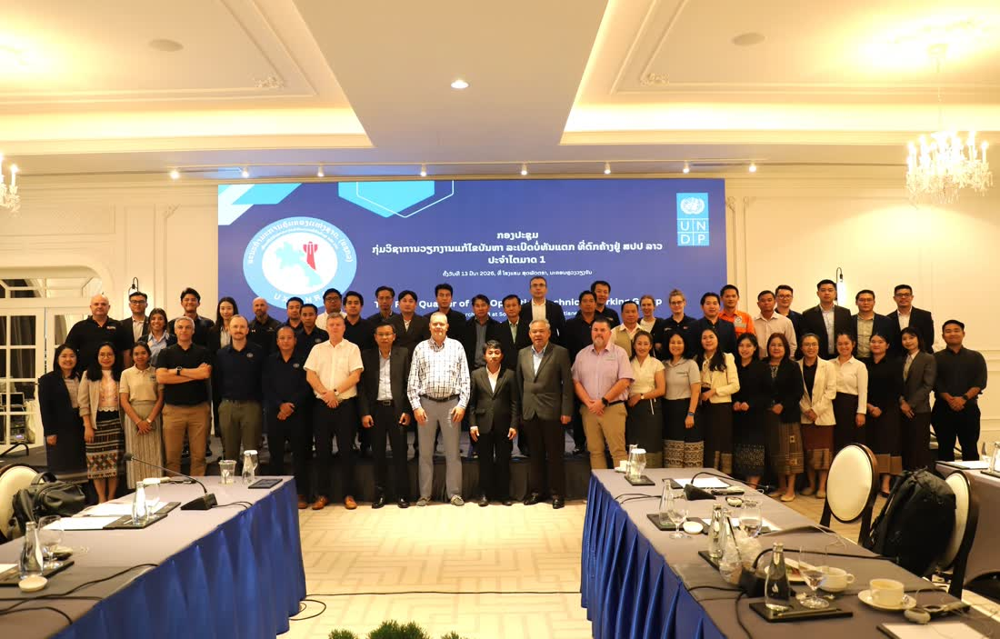
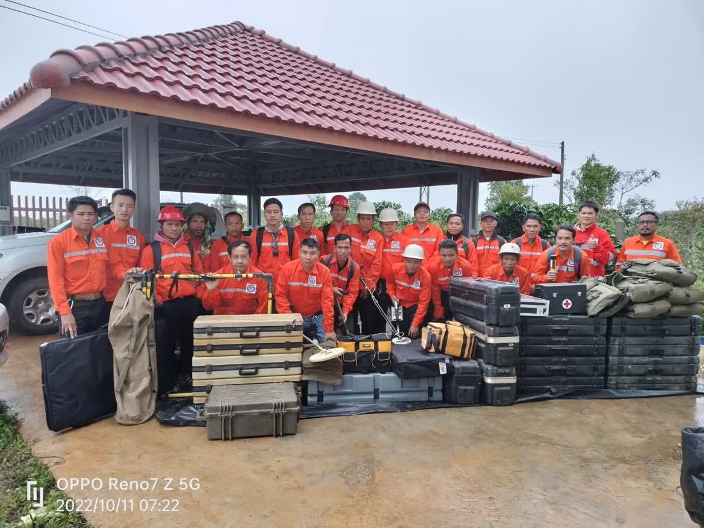
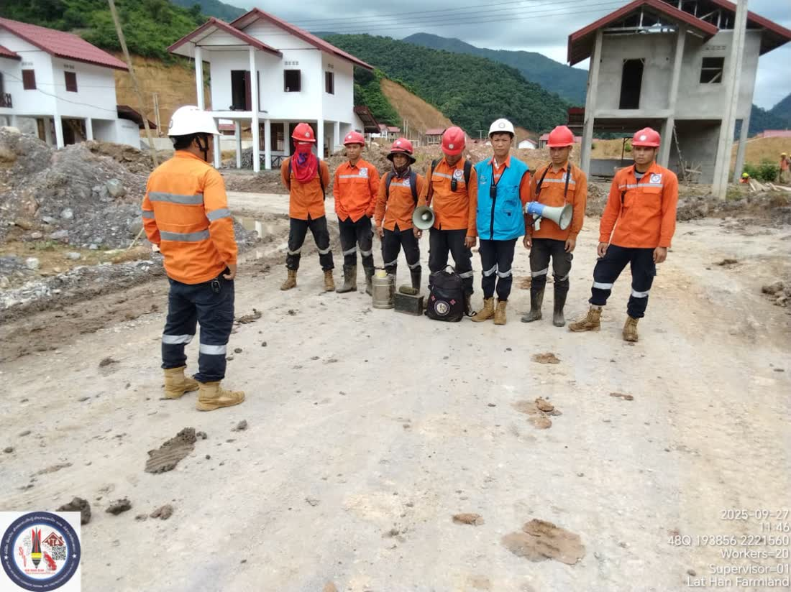
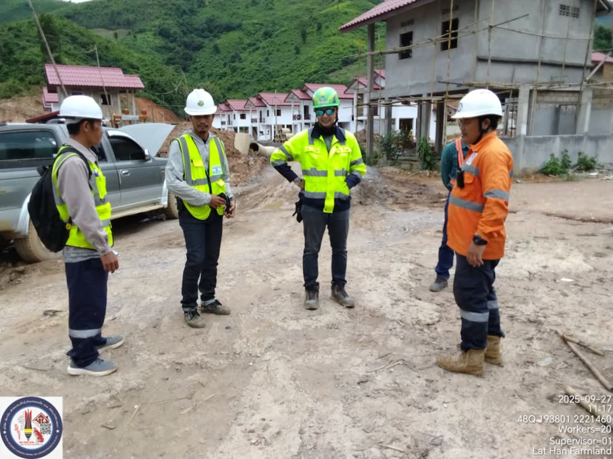
ເຫດຜົນທີ່ຂ້າພະເຈົ້າສ້າງຕັ້ງ ບໍລິສັດ ສີລາວັນ ສຳຫຼວດ, ເກັບກູ້, ທຳລາຍລະເບີດ ແລະ ກໍ່ສ້າງ ຈຳກັດຜູ້ດຽວ (ສລວ) ຂຶ້ນມານັ້ນ ຈຸດປະສົງຫຼັກແມ່ນເພື່ອເກັບກູ້ລະເບີດບໍ່ທັນແຕກ ຢູ່ ສປປ ລາວ ໂດຍສະໜັບສະໜູນໂຄງການພະລັງງານລົມ Monsoon (MWP) ໃນໄລຍະ 2 ປີ ແລະ ແຜນປະຕິບັດງານໄລຍະຍາວ. ບໍລິສັດ ສລວ ມຸ່ງໝັ້ນໃຫ້ບໍລິການເກັບກູ້ລະເບີດບໍ່ທັນແຕກ ຢ່າງປອດໄພ ແລະ ມີປະສິດທິພາບ.I established SILAVAN UXO Survey, Clearance, Disposal and Construction Sole Co., Ltd (SLV) with one main purpose: to clear unexploded ordnance (UXO) in Lao PDR, supporting the Monsoon Wind Project (MWP) through its two-year period and under a long-term implementation plan. SLV is dedicated to providing safe and effective UXO clearance.我创办西拉万未爆弹药勘察、清除、销毁与建筑独资有限公司（SLV），主要目的是在老挝人民民主共和国境内清除未爆弹药，为期两年的季风风电项目（MWP）提供支持，并制定长期实施计划。SLV 致力于提供安全、高效的未爆弹药清除服务。เหตุผลที่ข้าพเจ้าก่อตั้งบริษัท สีลาวัน สำรวจ,เก็บกู้,ทำลายระเบิด และ ก่อสร้าง จำกัด (SLV) ขึ้นมานั้น จุดประสงค์หลักคือเพื่อเก็บกู้ระเบิดที่ยังไม่ระเบิดใน สปป.ลาว โดยสนับสนุนโครงการพลังงานลม Monsoon (MWP) ในระยะ 2 ปี และแผนปฏิบัติงานระยะยาว บริษัท SLV มุ่งมั่นให้บริการเก็บกู้ระเบิดที่ยังไม่ระเบิดอย่างปลอดภัยและมีประสิทธิภาพLý do tôi thành lập Công ty TNHH MTV Khảo sát, Rà phá, Hủy nổ Bom mìn và Xây dựng SILAVAN (SLV) là nhằm rà phá bom mìn chưa nổ tại CHDCND Lào, hỗ trợ Dự án Điện gió Monsoon (MWP) trong giai đoạn hai năm và theo kế hoạch triển khai dài hạn. SLV cam kết cung cấp dịch vụ rà phá bom mìn chưa nổ an toàn và hiệu quả.
ບໍລິສັດ ສລວ ຈະຝຶກອົບຮົມ ແລະ ສ້າງທີມງານພະນັກງານລາວຢ່າງຕໍ່ເນື່ອງ ເພື່ອແກ້ໄຂບັນຫາໄລຍະຍາວທີ່ສົ່ງຜົນກະທົບຕໍ່ ສປປ ລາວ ຊຶ່ງໝາຍເຖິງການຝຶກອົບຮົມພະນັກງານທີ່ຄັດເລືອກມາຈາກຊຸມຊົນທີ່ໄດ້ຮັບຜົນກະທົບ ໃຫ້ສາມາດໝາຍເຂດ ແລະ ເກັບກູ້ລະເບີດໃນທີ່ດິນໄດ້ ພ້ອມທັງ ສລວ ເປັນນາຍຈ້າງທີ່ໃຫ້ໂອກາດເທົ່າທຽມກັນ.SLV will continue to train and build teams of Lao personnel to address the long-term problem affecting Lao PDR. That means training selected personnel from the affected communities themselves to mark and clear land of UXO. SLV is an equal opportunities employer.SLV 将持续培训并组建老挝籍作业队伍，以应对长期影响老挝人民民主共和国的问题，即从受影响社区中挑选人员进行培训，使其能够标记并清除土地上的未爆弹药。SLV 是提供平等就业机会的雇主。บริษัท SLV จะฝึกอบรมและสร้างทีมงานพนักงานลาวอย่างต่อเนื่อง เพื่อแก้ไขปัญหาระยะยาวที่ส่งผลกระทบต่อ สปป.ลาว ซึ่งหมายถึงการฝึกอบรมพนักงานที่คัดเลือกมาจากชุมชนที่ได้รับผลกระทบ ให้สามารถทำเครื่องหมายเขตและเก็บกู้ระเบิดในที่ดินได้ ทั้งนี้ SLV เป็นนายจ้างที่ให้โอกาสเท่าเทียมกันSLV sẽ liên tục đào tạo và xây dựng đội ngũ nhân sự người Lào để giải quyết vấn đề lâu dài đang ảnh hưởng tới CHDCND Lào, nghĩa là đào tạo nhân sự được tuyển chọn từ chính các cộng đồng bị ảnh hưởng để đánh dấu và rà phá bom mìn trên đất. SLV là nhà tuyển dụng bảo đảm cơ hội bình đẳng.
ບໍລິສັດຂອງພວກເຮົາມີເຈດຈຳນົງໃຫ້ບໍລິການທີ່ເປັນທຳແກ່ລູກຄ້າ ທັງພາຍໃນ ແລະ ຕ່າງປະເທດ ທີ່ເຂົ້າມາລົງທຶນໃນທຸກຂະແໜງການຢູ່ລາວ ໃນວຽກງານເກັບກູ້ ແລະ ທຳລາຍລະເບີດບໍ່ທັນແຕກ ເຊັ່ນ: ໂຄງການພະລັງງານລົມ, ໂຄງການເຂື່ອນໄຟຟ້ານໍ້າຕົກ, ເຂດບໍ່ແຮ່, ໂຄງການກໍ່ສ້າງເສັ້ນທາງ, ໂຄງການພັດທະນາຊົນນະບົດ ແລະ ໂຄງການກະສິກຳ ເພື່ອຮັບປະກັນຄວາມປອດໄພຈາກລະເບີດໃນພື້ນທີ່ຂອງລູກຄ້າ.Our company is committed to providing fair services to clients, both domestic and overseas, who invest in any sector in Laos. Our UXO clearance and disposal work in Lao PDR covers wind power projects, hydropower projects, mining areas, road construction projects, rural development projects and agricultural projects, ensuring our clients’ sites are safe from UXO.本公司致力于为境内外各行业投资老挝的客户提供公平的服务，涵盖老挝人民民主共和国的未爆弹药清除与销毁作业，例如：风力发电项目、水电站项目、矿区、道路建设项目、农村发展项目和农业项目，确保客户所在区域免受未爆弹药威胁。บริษัทของเรามีเจตจำนงให้บริการที่เป็นธรรมแก่ลูกค้าทั้งภายในและต่างประเทศ ที่เข้ามาลงทุนในทุกภาคส่วนในลาว ในงานเก็บกู้และทำลายระเบิดที่ยังไม่ระเบิด เช่น โครงการพลังงานลม โครงการเขื่อนไฟฟ้าพลังน้ำ เขตเหมืองแร่ โครงการก่อสร้างถนน โครงการพัฒนาชนบท และโครงการเกษตรกรรม เพื่อรับประกันความปลอดภัยจากระเบิดในพื้นที่ของลูกค้าCông ty chúng tôi cam kết cung cấp dịch vụ công bằng cho khách hàng trong và ngoài nước đầu tư vào mọi lĩnh vực tại Lào, trong công tác rà phá và hủy nổ bom mìn chưa nổ, chẳng hạn: dự án điện gió, dự án thủy điện, khu vực khai khoáng, dự án xây dựng đường bộ, dự án phát triển nông thôn và dự án nông nghiệp, nhằm bảo đảm an toàn khỏi bom mìn trong khu vực của khách hàng.
ພວກເຮົາມີປະສົບການລະດັບຜູ້ຊ່ຽວຊານທຳລາຍລະເບີດອາວຸໂສ (SEOD ລະດັບ 4) ໃນການເກັບກູ້ລະເບີດບໍ່ທັນແຕກ ພ້ອມທັງດຳເນີນການທຳລາຍລູກລະເບີດທາງອາກາດ ແລະ ລະເບີດລູກຫວ່ານປະເພດຕ່າງໆ ຢູ່ ສປປ ລາວ ໂດຍຂັ້ນຕອນການປະຕິບັດງານ (SOPs) ໄດ້ຮັບການຮັບຮອງຈາກ ຄະນະກຳມະການຄຸ້ມຄອງແຫ່ງຊາດ (ຄຊກລ).We hold experience at Senior Explosive Ordnance Disposal (SEOD level 4) in the clearance of unexploded ordnance (UXO), and we carry out the destruction of airdropped bombs and various types of submunitions in Lao PDR. Our standard operating procedures (SOPs) are accredited with the Lao PDR National Regulatory Authority (NRA).我们拥有高级弹药销毁专家（SEOD 四级）资质与经验，从事未爆弹药清除工作，并在老挝执行空投炸弹及各类子弹药的销毁作业；公司作业规程（SOPs）已获老挝人民民主共和国国家管理局（NRA）认证。เรามีประสบการณ์ระดับผู้เชี่ยวชาญทำลายระเบิดอาวุโส (SEOD ระดับ 4) ในการเก็บกู้ระเบิดที่ยังไม่ระเบิด พร้อมทั้งดำเนินการทำลายลูกระเบิดทางอากาศและระเบิดลูกหว่านประเภทต่าง ๆ ใน สปป.ลาว โดยขั้นตอนการปฏิบัติงาน (SOPs) ได้รับการรับรองจากคณะกรรมการคุ้มครองแห่งชาติ (NRA)Chúng tôi có kinh nghiệm ở cấp Chuyên gia Hủy nổ Vật liệu nổ Cao cấp (SEOD cấp 4) trong rà phá bom mìn chưa nổ, đồng thời thực hiện hủy nổ bom thả từ máy bay và các loại bom bi tại CHDCND Lào; quy trình tác nghiệp (SOPs) đã được Cơ quan Quản lý Quốc gia (NRA) công nhận.
ໃນໂອກາດນີ້ ຂ້າພະເຈົ້າຂໍສະແດງຄວາມຂອບໃຈມາຍັງ ລັດຖະບານ ສປປ ລາວ, ຄະນະກຳມະການຄຸ້ມຄອງແຫ່ງຊາດ ເພື່ອແກ້ໄຂບັນຫາລະເບີດບໍ່ທັນແຕກ ແລະ ລູກຄ້າຂອງພວກເຮົາທັງພາຍໃນ ແລະ ຕ່າງປະເທດ. ຂ້າພະເຈົ້າຫວັງຢ່າງຍິ່ງວ່າ ທ່ານຈະສືບຕໍ່ໃຫ້ການສະໜັບສະໜູນ ແລະ ນຳໃຊ້ບໍລິການຂອງພວກເຮົາ ໃນວຽກງານເກັບກູ້ລະເບີດບໍ່ທັນແຕກ ແລະ ທຸ່ນລະເບີດ ໃນຕໍ່ໜ້າ.On this occasion, I would like to thank the Government of Lao PDR, the National Regulatory Authority for the UXO/Mine Action Sector, and our clients both domestic and overseas. I very much hope that you will continue to support us, and to choose our services for your UXO and mine clearance work in the future.借此机会，谨向老挝人民民主共和国政府、未爆弹药／地雷问题国家管理局，以及我们境内外的客户表示衷心感谢。诚挚希望各位今后继续给予支持，并在未爆弹药与地雷清除业务上选用我们的服务。ในโอกาสนี้ ข้าพเจ้าขอแสดงความขอบคุณมายังรัฐบาล สปป.ลาว คณะกรรมการคุ้มครองแห่งชาติเพื่อแก้ไขปัญหาระเบิดที่ยังไม่ระเบิด และลูกค้าของเราทั้งภายในและต่างประเทศ ข้าพเจ้าหวังเป็นอย่างยิ่งว่าท่านจะสนับสนุนและใช้บริการของเราในงานเก็บกู้ระเบิดที่ยังไม่ระเบิดและทุ่นระเบิดต่อไปในอนาคตNhân dịp này, tôi xin chân thành cảm ơn Chính phủ CHDCND Lào, Cơ quan Quản lý Quốc gia về Bom mìn/Vật nổ và các khách hàng trong và ngoài nước. Tôi rất mong quý vị tiếp tục ủng hộ và sử dụng dịch vụ của chúng tôi trong công tác rà phá bom mìn và vật nổ trong thời gian tới.
ປະທານບໍລິສັດCompany president公司董事长ประธานบริษัทChủ tịch công ty
ບໍລິສັດ ສີລາວັນ ສຳຫຼວດ, ເກັບກູ້, ທຳລາຍລະເບີດ ແລະ ກໍ່ສ້າງ ຈຳກັດຜູ້ດຽວ (ສລວ) ໄດ້ສ້າງຕັ້ງຂຶ້ນໃນເດືອນ ທັນວາ 2018 ພາຍໃຕ້ການອະນຸຍາດຂອງ ກະຊວງການຕ່າງປະເທດ ແລະ ການຮັບຮອງຂອງ ຄະນະກຳມະການຄຸ້ມຄອງແຫ່ງຊາດ ເພື່ອແກ້ໄຂບັນຫາລະເບີດບໍ່ທັນແຕກ ຢູ່ ສປປ ລາວ.SILAVAN UXO Survey, Clearance, Disposal and Construction Sole Co., Ltd (SLV) was established in December 2018, under the authorisation of the Ministry of Foreign Affairs and the accreditation of the National Regulatory Authority for the UXO/Mine Action Sector in Lao PDR.西拉万未爆弹药勘察、清除、销毁与建筑独资有限公司（SLV）成立于 2018 年 12 月，经老挝外交部批准，并获得老挝人民民主共和国未爆弹药／地雷行动领域国家管理局认证。บริษัท สีลาวัน สำรวจ,เก็บกู้,ทำลายระเบิด และ ก่อสร้าง จำกัด (SLV) ก่อตั้งขึ้นในเดือนธันวาคม 2018 ภายใต้การอนุญาตของกระทรวงการต่างประเทศ และการรับรองของคณะกรรมการคุ้มครองแห่งชาติเพื่อแก้ไขปัญหาระเบิดที่ยังไม่ระเบิดใน สปป.ลาวCông ty TNHH MTV Khảo sát, Rà phá, Hủy nổ Bom mìn và Xây dựng SILAVAN (SLV) được thành lập vào tháng 12 năm 2018, theo giấy phép của Bộ Ngoại giao và được Cơ quan Quản lý Quốc gia về lĩnh vực Bom mìn/Vật nổ tại CHDCND Lào công nhận.
ຜູ້ອຳນວຍການບໍລິສັດ ມີປະສົບການດ້ານລະເບີດບໍ່ທັນແຕກ ແລະ ການຄຸ້ມຄອງ ໃນລະດັບຜູ້ຊ່ຽວຊານທຳລາຍລະເບີດອາວຸໂສ (SEOD ລະດັບ 4) ດ້ວຍປະສົບການຫຼາຍກວ່າ 24 ປີ ໃນຂະແໜງລະເບີດບໍ່ທັນແຕກ ທັງຢູ່ ສປປ ລາວ ແລະ ຕ່າງປະເທດ ເຊັ່ນ: UXO LAO, INGO, HANDICAP INTERNATIONAL, MAG, Norwegian People’s Aid (NPA), HALO TRUST, ບໍລິສັດເອກະຊົນ, MINETECH, BACTECH, AUSLAO, ກຳປູເຈຍ ແລະ ໂມແຊມບິກ (ອາຟຣິກາ)The company’s director has experience in UXO operations and management at Senior Explosive Ordnance Disposal (SEOD level 4), with over 24 years in the UXO sector in Lao PDR and overseas, including: UXO LAO, INGO, HANDICAP INTERNATIONAL, MAG, Norwegian People’s Aid (NPA), HALO TRUST, commercial companies, MINETECH, BACTECH, AUSLAO, Cambodia and Mozambique (Africa)公司总监具备未爆弹药作业与管理经验，持有高级弹药销毁专家（SEOD 四级）资质，在老挝人民民主共和国及海外的未爆弹药领域拥有超过 24 年经验，曾服务于：UXO LAO、INGO、HANDICAP INTERNATIONAL、MAG、挪威人民援助会（NPA）、HALO TRUST、商业公司、MINETECH、BACTECH、AUSLAO，以及柬埔寨和莫桑比克（非洲）。ผู้อำนวยการบริษัทมีประสบการณ์ด้านระเบิดที่ยังไม่ระเบิดและการบริหารจัดการ ในระดับผู้เชี่ยวชาญทำลายระเบิดอาวุโส (SEOD ระดับ 4) ด้วยประสบการณ์กว่า 24 ปี ในภาคงานระเบิดที่ยังไม่ระเบิด ทั้งใน สปป.ลาว และต่างประเทศ เช่น UXO LAO, INGO, HANDICAP INTERNATIONAL, MAG, Norwegian People’s Aid (NPA), HALO TRUST, บริษัทเอกชน, MINETECH, BACTECH, AUSLAO, กัมพูชา และโมซัมบิก (แอฟริกา)Giám đốc công ty có kinh nghiệm về bom mìn chưa nổ và quản lý ở cấp Chuyên gia Hủy nổ Vật liệu nổ Cao cấp (SEOD cấp 4), với hơn 24 năm kinh nghiệm trong lĩnh vực bom mìn tại CHDCND Lào và nước ngoài, như: UXO LAO, INGO, HANDICAP INTERNATIONAL, MAG, Norwegian People’s Aid (NPA), HALO TRUST, các công ty thương mại, MINETECH, BACTECH, AUSLAO, Campuchia và Mozambique (châu Phi).
ພະນັກງານທຸກຄົນມີປະສົບການ ແລະ ເຄີຍປະຕິບັດງານກັບ INGO, UXO LAO ແລະ ບໍລິສັດເອກະຊົນ ໃນສະພາບການທີ່ຫຼາກຫຼາຍ ໂດຍສະເພາະຢູ່ພາຍໃນປະເທດລາວ ດ້ານຄວາມຮູ້ກ່ຽວກັບການເກັບກູ້ພື້ນທີ່ສະໜາມຮົບ ແລະ ການເກັບກູ້ທຸ່ນລະເບີດ.All personnel have experience working with INGOs, UXO LAO and commercial companies across a range of situations, particularly within Laos, with knowledge of battle area clearance and mine clearance.全体员工均具备实战经验，曾在不同环境下与 INGO、UXO LAO 及商业公司合作，尤其是在老挝境内，掌握战场清除与地雷清除的专业知识。พนักงานทุกคนมีประสบการณ์และเคยปฏิบัติงานกับ INGO, UXO LAO และบริษัทเอกชน ในสภาพการณ์ที่หลากหลาย โดยเฉพาะภายในประเทศลาว ด้านความรู้เกี่ยวกับการเก็บกู้พื้นที่สนามรบและการเก็บกู้ทุ่นระเบิดToàn bộ nhân sự đều có kinh nghiệm và từng làm việc với INGO, UXO LAO và các công ty thương mại trong nhiều hoàn cảnh khác nhau, đặc biệt tại Lào, với kiến thức về rà phá khu vực chiến sự và rà phá mìn.
ພວກເຮົາຈະໃຫ້ບໍລິການເກັບກູ້ ແລະ ທຳລາຍລະເບີດບໍ່ທັນແຕກ ດ້ວຍມາດຕະຖານການປະຕິບັດງານທີ່ສູງ ໃຫ້ແກ່ລູກຄ້າໃນຫຼາຍແຂວງທົ່ວປະເທດລາວ ໂດຍບໍລິສັດມີພະນັກງານວິຊາການທີ່ມີຄຸນວຸດທິ, ອຸປະກອນຄົບຖ້ວນ, ພາຫະນະ ແລະ ສິ່ງຈຳເປັນຕ່າງໆ ເພື່ອສະໜັບສະໜູນວຽກງານເກັບກູ້ລະເບີດ ຢູ່ ສປປ ລາວ.We carry out UXO clearance and disposal to high operational standards for clients in many provinces across Laos. The company has qualified technical staff, full equipment, transport and the other essentials needed to support UXO clearance in Lao PDR.我们将以高标准作业为老挝多个省份的客户提供未爆弹药清除与销毁服务。公司拥有合格的技术人员、齐全的装备、运输车辆及各项必需资源，为老挝人民民主共和国的未爆弹药清除工作提供保障。เราจะให้บริการเก็บกู้และทำลายระเบิดที่ยังไม่ระเบิด ด้วยมาตรฐานการปฏิบัติงานที่สูง แก่ลูกค้าในหลายแขวงทั่วประเทศลาว โดยบริษัทมีพนักงานวิชาการที่มีคุณวุฒิ อุปกรณ์ครบครัน ยานพาหนะ และสิ่งจำเป็นต่าง ๆ เพื่อสนับสนุนงานเก็บกู้ระเบิดใน สปป.ลาวChúng tôi sẽ cung cấp dịch vụ rà phá và hủy nổ bom mìn chưa nổ theo tiêu chuẩn tác nghiệp cao cho khách hàng tại nhiều tỉnh trên khắp nước Lào; công ty có đội ngũ kỹ thuật đủ trình độ, trang thiết bị đầy đủ, phương tiện vận chuyển và các nguồn lực cần thiết để hỗ trợ công tác rà phá bom mìn tại CHDCND Lào.
ຂະຫຍາຍພື້ນທີ່ທີ່ປອດຈາກລະເບີດບໍ່ທັນແຕກ ແລະ ສົ່ງມອບທີ່ດິນຄືນໃຫ້ຊຸມຊົນ ໃນເຂດທີ່ໄດ້ຮັບຜົນກະທົບ ຢູ່ ສປປ ລາວ.To increase the area free from UXO and release land back to communities in the affected areas of Lao PDR.扩大老挝人民民主共和国受影响地区的无未爆弹药区域，并将土地移交给社区使用。ขยายพื้นที่ที่ปลอดจากระเบิดที่ยังไม่ระเบิด และส่งมอบที่ดินคืนให้ชุมชนในเขตที่ได้รับผลกระทบใน สปป.ลาวMở rộng diện tích sạch bom mìn chưa nổ và bàn giao đất lại cho cộng đồng tại các khu vực bị ảnh hưởng ở CHDCND Lào.
ແຫຼ່ງທີ່ມາ: ບົດລາຍງານປະຈຳປີ 2025 ຂອງ ສລວ ທີ່ສົ່ງໃຫ້ ຄະນະກຳມະການຄຸ້ມຄອງແຫ່ງຊາດ (ຄຊກລ) — ຂໍ້ມູນຜ່ານການກວດສອບ QM/QC ໃນພື້ນທີ່ຈິງ Source: SLV Annual Report 2025 filed with the National Regulatory Authority (NRA) — figures verified through on-site QM/QC inspection.资料来源：SLV 2025 年度报告，已报送国家管理局（NRA）——数据经现场 QM/QC 检查核实。แหล่งที่มา: รายงานประจำปี 2025 ของ SLV ที่ยื่นต่อคณะกรรมการคุ้มครองแห่งชาติ (NRA) — ข้อมูลผ่านการตรวจสอบ QM/QC ในพื้นที่จริงNguồn: Báo cáo Thường niên 2025 của SLV nộp cho Cơ quan Quản lý Quốc gia (NRA) — số liệu được xác minh qua kiểm tra QM/QC tại hiện trường.
ຈາກການເກັບກູ້ລະເບີດ ຮອດການກໍ່ສ້າງ ແລະ ການຈັດການສິ່ງເສດເຫຼືອ — ຈົບຄົບໃນບ່ອນດຽວ
From UXO clearance to construction and waste management — everything in one place.
从未爆弹药清除到工程建设与废弃物管理——一站式全部搞定。
ตั้งแต่การเก็บกู้ระเบิด ไปจนถึงงานก่อสร้างและการจัดการขยะ — ครบจบในที่เดียว
Từ rà phá bom mìn đến xây dựng và quản lý chất thải — tất cả trong một đầu mối.
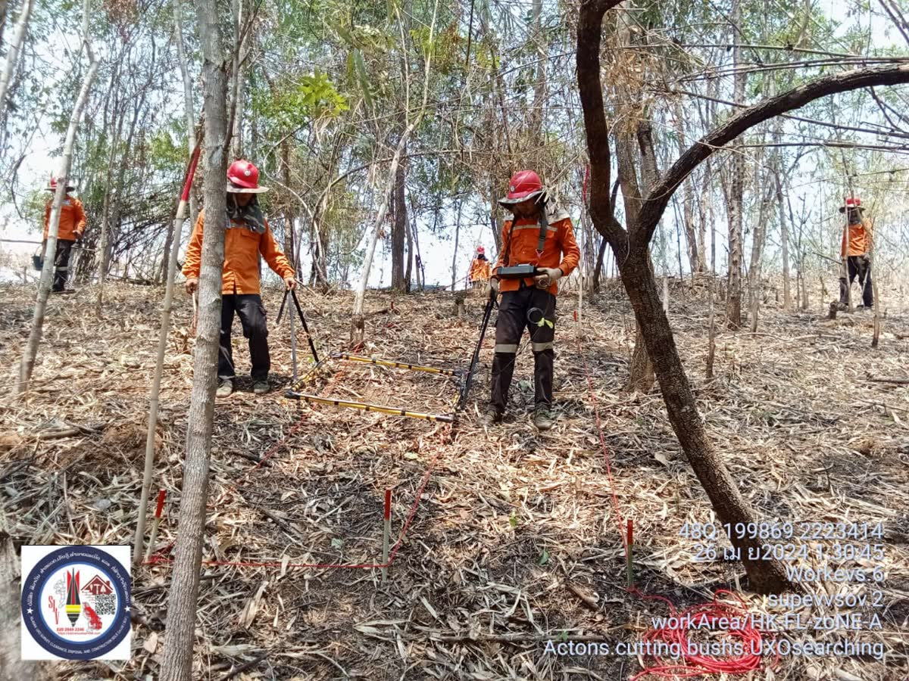
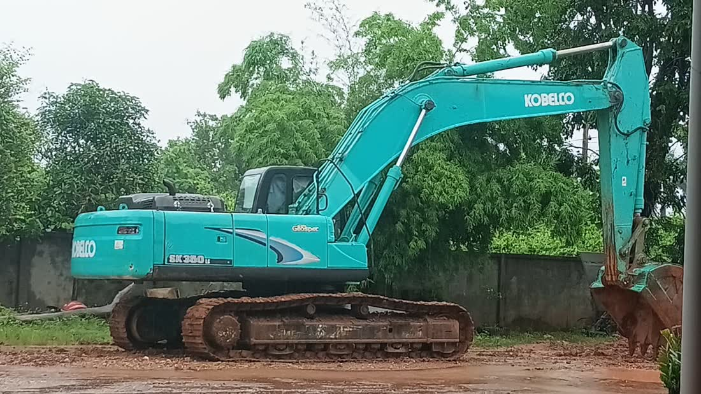
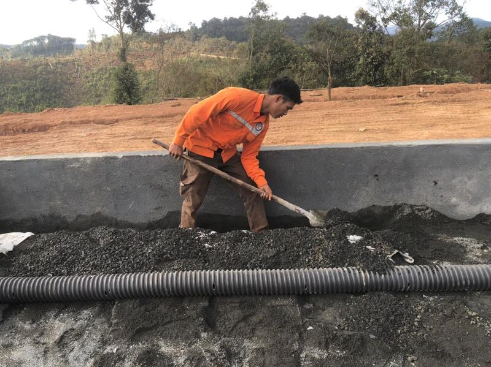
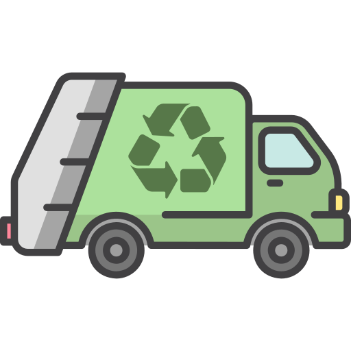
ຂະບວນການທີ່ໂປ່ງໃສ ຕິດຕາມໄດ້ທຸກຂັ້ນຕອນ
A transparent process you can follow at every stage.
流程全程透明，每一步都可追溯。
กระบวนการที่โปร่งใส ติดตามได้ทุกขั้นตอน
Quy trình minh bạch, theo dõi được ở mọi bước.
ໂທ ຫຼື ສົ່ງຂໍ້ຄວາມຫາເຮົາ ເພື່ອປຶກສາຄວາມຕ້ອງການ ແລະ ຮັບໃບສະເໜີລາຄາເບື້ອງຕົ້ນ
Call or message us to discuss your needs and get an initial quotation.
致电或发消息给我们，说明需求并获取初步报价。
โทรหรือส่งข้อความหาเรา เพื่อปรึกษาความต้องการและรับใบเสนอราคาเบื้องต้น
Gọi điện hoặc nhắn tin cho chúng tôi để trao đổi nhu cầu và nhận báo giá sơ bộ.
ທີມງານລົງສຳຫຼວດ ປະເມີນຄວາມສ່ຽງ ແລະ ວາງແຜນການປະຕິບັດງານ
Our team surveys the site, assesses risks and plans the operation.
团队赴现场勘察、评估风险并制定作业计划。
ทีมงานลงสำรวจพื้นที่ ประเมินความเสี่ยง และวางแผนการปฏิบัติงาน
Đội ngũ khảo sát hiện trường, đánh giá rủi ro và lập kế hoạch thi công.
ດຳເນີນການເກັບກູ້ / ກໍ່ສ້າງ / ຈັດການສິ່ງເສດເຫຼືອ ຕາມມາດຕະຖານຄວາມປອດໄພ
Clearance, construction or waste service carried out to safety standards.
按安全标准执行清除、建设或废弃物处理作业。
ดำเนินการเก็บกู้ / ก่อสร้าง / จัดการขยะ ตามมาตรฐานความปลอดภัย
Thực hiện rà phá, xây dựng hoặc xử lý chất thải theo tiêu chuẩn an toàn.
ສົ່ງມອບພື້ນທີ່ ພ້ອມບົດລາຍງານ ແລະ ເອກະສານຢັ້ງຢືນການເກັບກູ້
Site handover with full report and clearance certification documents.
移交场地，并附完整报告与清除认证文件。
ส่งมอบพื้นที่ พร้อมรายงานและเอกสารรับรองการเก็บกู้
Bàn giao mặt bằng kèm báo cáo đầy đủ và hồ sơ chứng nhận rà phá.
ພວກເຮົາດຳເນີນທຸລະກິດດ້ານການສຳຫຼວດ-ເກັບກູ້ລະເບີດບໍ່ທັນແຕກ (UXO), ງານກໍ່ສ້າງ ແລະ ການຈັດການສິ່ງເສດເຫຼືອ ໂດຍໃຫ້ບໍລິການໂຄງການທົ່ວປະເທດ. ພາລະກິດຂອງເຮົາຄື ເຮັດໃຫ້ທີ່ດິນຂອງທ່ານປອດໄພ ພ້ອມພັດທະນາ ແລະ ນຳໃຊ້ໄດ້ຢ່າງໝັ້ນໃຈ
We operate nationwide across Lao PDR in UXO clearance, construction and waste management. Our mission is simple: make your land safe, ready to develop, and ready to use with confidence.
我们的未爆弹药清除、工程建设与废弃物管理业务遍及老挝全国。我们的使命很简单：让您的土地安全、可开发、可放心使用。
เราให้บริการทั่วประเทศ สปป.ลาว ทั้งงานเก็บกู้ระเบิด ก่อสร้าง และจัดการขยะ พันธกิจของเราเรียบง่าย คือทำให้ที่ดินของคุณปลอดภัย พร้อมพัฒนา และพร้อมใช้งานอย่างมั่นใจ
Chúng tôi hoạt động trên toàn CHDCND Lào trong lĩnh vực rà phá bom mìn, xây dựng và quản lý chất thải. Sứ mệnh của chúng tôi rất đơn giản: làm cho đất của bạn an toàn, sẵn sàng phát triển và sử dụng với sự yên tâm.
ເຮົາໃຫ້ບໍລິການສຳຫຼວດ ແລະ ເກັບກູ້ລະເບີດ ໃຫ້ໂຄງການພະລັງງານ, ສາຍສົ່ງໄຟຟ້າ, ບໍ່ແຮ່ ແລະ ອົງກອນພັດທະນາ ຫຼາຍກວ່າ 80 ໂຄງການ ທົ່ວປະເທດລາວ
We have delivered UXO survey and clearance for more than 80 energy, transmission, mining and development projects across Lao PDR.
我们已为老挝全国 80 多个能源、输电、矿业及开发项目完成未爆弹药勘察与清除工作。
เราได้ดำเนินงานสำรวจและเก็บกู้ระเบิดให้กับโครงการด้านพลังงาน สายส่ง เหมืองแร่ และการพัฒนา มากกว่า 80 โครงการทั่ว สปป.ลาว
Chúng tôi đã thực hiện khảo sát và rà phá bom mìn cho hơn 80 dự án năng lượng, truyền tải điện, khai khoáng và phát triển trên khắp CHDCND Lào.
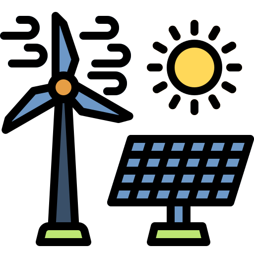
ພະລັງງານລົມ ແລະ ແສງອາທິດWind & Solar风电与光伏พลังงานลมและแสงอาทิตย์Điện gió & điện mặt trời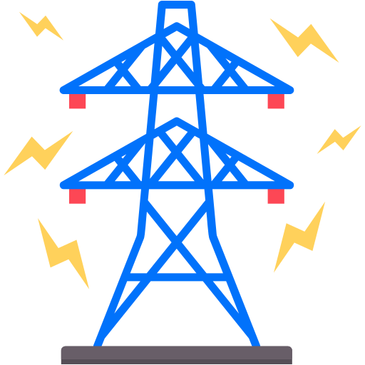
ສາຍສົ່ງໄຟຟ້າ ແລະ ພື້ນຖານໂຄງລ່າງTransmission & Infrastructure输电与基础设施สายส่งไฟฟ้าและโครงสร้างพื้นฐานTruyền tải điện & hạ tầng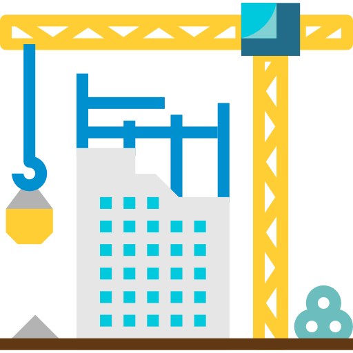
ກໍ່ສ້າງ ແລະ ຮັບເໝົາConstruction & Contracting建筑与承包ก่อสร้างและรับเหมาXây dựng & tổng thầuແລະ ໂຄງການອື່ນໆ ອີກຫຼາຍສິບແຫ່ງ ທົ່ວປະເທດລາວ
…and dozens of further projects nationwide.
……以及全国范围内的数十个其他项目。
และโครงการอื่น ๆ อีกหลายสิบแห่งทั่วประเทศ
…và hàng chục dự án khác trên toàn quốc.
ວຽກງານທັງໝົດຂອງ ສລວ ປະຕິບັດຕາມມາດຕະຖານແຫ່ງຊາດ ດ້ານການແກ້ໄຂບັນຫາລະເບີດບໍ່ທັນແຕກ ຂອງ ສປປ ລາວ
All SLV operations follow the Lao PDR National Standards for the UXO/Mine Action Sector.
SLV 的全部作业均遵循老挝人民民主共和国未爆弹药／地雷行动领域国家标准。
การปฏิบัติงานทั้งหมดของ SLV เป็นไปตามมาตรฐานแห่งชาติของ สปป.ลาว สำหรับภาคงานระเบิดที่ยังไม่ระเบิด/ทุ่นระเบิด
Mọi hoạt động của SLV đều tuân thủ Tiêu chuẩn Quốc gia CHDCND Lào cho lĩnh vực Bom mìn/Vật nổ.
ວຽກງານເກັບກູ້ຂອງ ສລວ ຖືກກວດສອບຄຸນນະພາບ (QM/QC) ໂດຍທີມງານ ຄຊກລ ໃນພື້ນທີ່ຈິງ, ພ້ອມສົ່ງບົດລາຍງານປະຈຳເດືອນ ແລະ ປະຈຳປີ ໃຫ້ ຄຊກລ ຢ່າງຕໍ່ເນື່ອງ ແລະ ເຂົ້າຮ່ວມກອງປະຊຸມກຸ່ມວິຊາການແກ້ໄຂບັນຫາ ລບຕ (UXO Sector Technical Working Group)
SLV clearance work is inspected on site by NRA quality management and quality control teams. We submit monthly and annual reports to the NRA and take part in the national UXO Sector Technical Working Group.
SLV 的清除作业由 NRA 质量管理与质量控制团队现场检查。我们按月和按年向 NRA 报送报告，并参与全国未爆弹药领域技术工作组。
งานเก็บกู้ของ SLV ได้รับการตรวจสอบในพื้นที่โดยทีมบริหารคุณภาพและควบคุมคุณภาพของ NRA เราส่งรายงานรายเดือนและรายปีให้ NRA และเข้าร่วมคณะทำงานวิชาการภาคงานระเบิดที่ยังไม่ระเบิดระดับชาติ
Công tác rà phá của SLV được các tổ Quản lý Chất lượng và Kiểm soát Chất lượng của NRA kiểm tra tại hiện trường. Chúng tôi nộp báo cáo hằng tháng và hằng năm cho NRA và tham gia Tổ Công tác Kỹ thuật ngành Bom mìn quốc gia.
ຄະນະກຳມະການຄຸ້ມຄອງແຫ່ງຊາດ ເພື່ອແກ້ໄຂບັນຫາລະເບີດບໍ່ທັນແຕກ ທີ່ຕົກຄ້າງຢູ່ ສປປ ລາວ — nra.gov.la
National Regulatory Authority for UXO/Mine Action Sector in Lao PDR — nra.gov.la
老挝人民民主共和国未爆弹药／地雷行动领域国家管理局 — nra.gov.la
คณะกรรมการคุ้มครองแห่งชาติเพื่อภาคงานระเบิดที่ยังไม่ระเบิด/ทุ่นระเบิด ใน สปป.ลาว — nra.gov.la
Cơ quan Quản lý Quốc gia về lĩnh vực Bom mìn/Vật nổ tại CHDCND Lào — nra.gov.la
ດາວໂຫຼດເປັນໄຟລ໌ PDF ແຍກແຕ່ລະພາກ (ສະບັບພາສາອັງກິດ)
Download as individual PDF files (English edition)
按章节下载 PDF 文件（英文版）
ดาวน์โหลดเป็นไฟล์ PDF รายฉบับ (ฉบับภาษาอังกฤษ)
Tải từng tệp PDF riêng (bản tiếng Anh)
ເອກະສານມາດຕະຖານແຫ່ງຊາດ ເປັນລິຂະສິດຂອງ ຄຊກລ — ນຳມາເຜີຍແຜ່ເພື່ອອ້າງອີງ
National Standards documents are published by the NRA — reproduced here for reference.
国家标准文件由 NRA 发布，此处转载仅供参考。
เอกสารมาตรฐานแห่งชาติจัดพิมพ์โดย NRA — นำมาเผยแพร่ที่นี่เพื่อการอ้างอิง
Tài liệu Tiêu chuẩn Quốc gia do NRA ban hành — đăng lại tại đây để tham khảo.
ຂັ້ນຕອນການປະຕິບັດງານຂອງບໍລິສັດ ຮັບຮອງໂດຍ ຄຊກລ ອີງຕາມມາດຕະຖານແຫ່ງຊາດ
Our company procedures, accredited by the NRA and built on the Lao PDR National Standards.
我们的公司规程已获 NRA 认证，并以老挝人民民主共和国国家标准为基础制定。
ขั้นตอนปฏิบัติงานของบริษัทเรา ได้รับการรับรองจาก NRA และจัดทำขึ้นบนพื้นฐานมาตรฐานแห่งชาติ สปป.ลาว
Quy trình của công ty chúng tôi được NRA công nhận và xây dựng trên nền Tiêu chuẩn Quốc gia CHDCND Lào.
SOPs ຂອງ ສລວ ຜ່ານການຮັບຮອງຈາກ ຄຊກລ ແລະ ອີງຕາມມາດຕະຖານແຫ່ງຊາດ 25 ພາກ ທຸກທີມງານພາກສະໜາມປະຕິບັດຕາມເອກະສານຊຸດນີ້
SLV SOPs are accredited with the NRA and aligned to the 25 National Standards. Every field team works to these documents.
SLV 的 SOPs 已获 NRA 认证，并与 25 项国家标准保持一致。所有现场作业队伍均按这些文件执行。
SOPs ของ SLV ได้รับการรับรองจาก NRA และสอดคล้องกับมาตรฐานแห่งชาติทั้ง 25 ฉบับ ทีมภาคสนามทุกทีมทำงานตามเอกสารเหล่านี้
SOPs của SLV được NRA công nhận và tuân theo 25 Tiêu chuẩn Quốc gia. Mọi đội hiện trường đều làm việc theo các tài liệu này.
ດາວໂຫຼດເປັນໄຟລ໌ PDF ແຍກແຕ່ລະບົດ (ສະບັບພາສາອັງກິດ)
Download as individual PDF files (English edition)
按章节下载 PDF 文件（英文版）
ดาวน์โหลดเป็นไฟล์ PDF รายฉบับ (ฉบับภาษาอังกฤษ)
Tải từng tệp PDF riêng (bản tiếng Anh)
ເອກະສານພາຍໃນຂອງ ບໍລິສັດ ສີລາວັນ ຈຳກັດ (ສລວ)
Internal documents of SILAVAN UXO Services Sole Co., Ltd (SLV).
西拉万未爆弹药服务独资有限公司（SLV）内部文件。
เอกสารภายในของบริษัท SILAVAN UXO Services จำกัด (SLV)
Tài liệu nội bộ của Công ty TNHH MTV SILAVAN UXO Services (SLV).
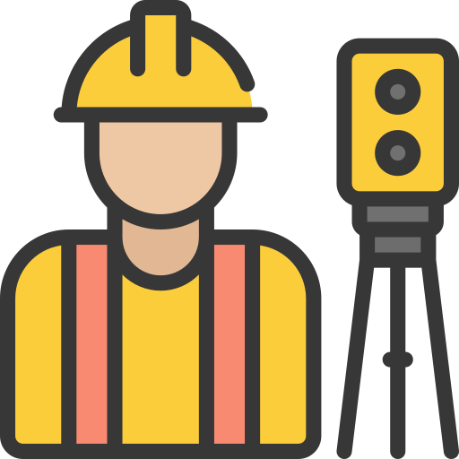
ສຳຫຼວດ ແລະ ເກັບກູ້ລະເບີດUXO Survey & Clearance未爆弹药勘察与清除สำรวจและเก็บกู้ระเบิดKhảo sát & rà phá bom mìnວິດີໂອຈິງຈາກການສຳຫຼວດ, ເກັບກູ້ ແລະ ທຳລາຍລະເບີດ ຢູ່ໂຄງການຕ່າງໆ
Real UXO discovery and demolition footage from SLV work sites in Lao PDR.
来自老挝人民民主共和国 SLV 作业现场的真实未爆弹药发现与销毁影像。
วิดีโอจริงจากการสำรวจ เก็บกู้ และทำลายระเบิด ณ โครงการต่าง ๆ ใน สปป.ลาว
Thước phim thực tế về phát hiện và hủy nổ bom mìn tại các công trường của SLV ở CHDCND Lào.
ຕິດຕໍ່ເຮົາມື້ນີ້ ເພື່ອຮັບໃບສະເໜີລາຄາ ໂດຍບໍ່ມີຄ່າໃຊ້ຈ່າຍ
Contact us today for a free, no-obligation quotation.
立即联系我们，获取免费报价，绝无义务。
ติดต่อเราวันนี้ เพื่อรับใบเสนอราคาฟรี ไม่มีข้อผูกมัด
Liên hệ ngay hôm nay để nhận báo giá miễn phí, không ràng buộc.